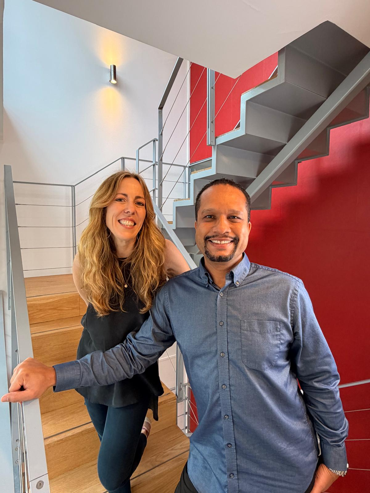
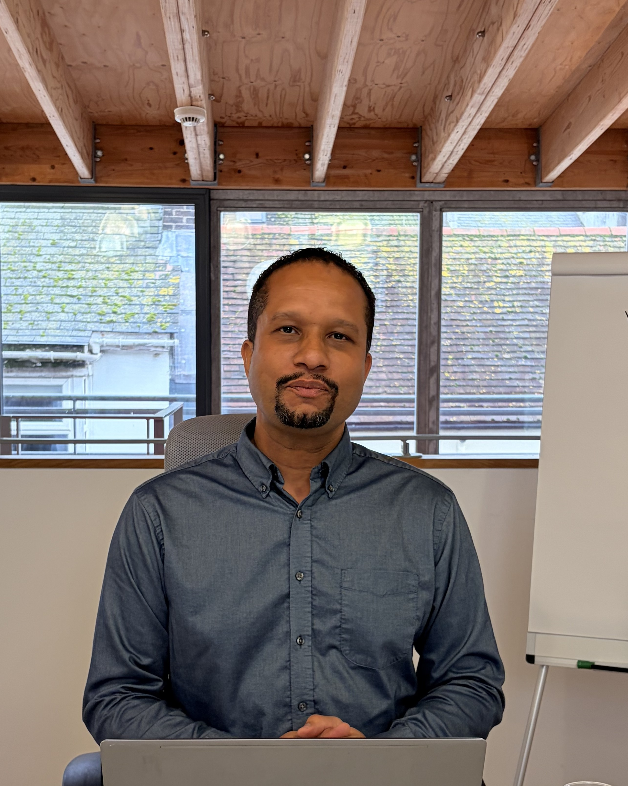
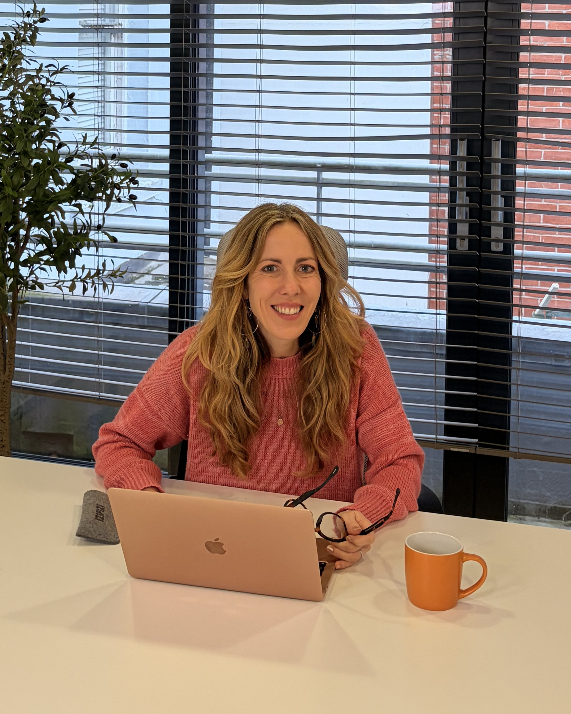

A three-hour, live, working session for people seriously considering investing in children's residential care, built on responsibility, sustainability and long-term impact, not returns alone. You'll leave with the 5 Key Principles we use on every deal we structure, real numbers from live case studies, and a clear answer on whether this sector, and our approach to it, is right for you.

In 2025, Ofsted opened nearly 900 investigations into suspected illegal children's homes in England.
There is a shortage of quality, suitable, compliant children's homes.
Responsible capital can be part of the solution, but only when it's built on the right foundations.
Building Better Futures Requires Better Investors
The children's homes sector is becoming more complex, more operationally demanding, and more heavily scrutinised. Much of the market conversation still puts returns ahead of responsibility.
Our focus isn't simply on helping investors enter this sector. It's on helping the right investors build sustainable, professionally and ethically operated children's homes, where care, stability and long-term impact sit alongside commercial viability. Responsible investment requires more than capital: it requires education, operational understanding, strategic guidance, and a genuine commitment to doing things properly. This isn't about becoming an operator; it's about becoming an intelligent, values-led investor working with the right partners and the right structure.
The regulatory landscape, the demand drivers, the commercial case, and where the risks are.
Our operating system for ethical, sustainable investment, developed over several years and applied to every transaction we structure. You'll see this demonstrated in live examples, not just described in theory.
Real examples of where people have gone wrong in this space, most of them the result of chasing returns without doing the responsible groundwork first.
How properly structured investments that provide stable homes for vulnerable children can deliver long-term, sustainable, passive income.
Case studies showing what the process looks like in practice, and why being part of this network can make a genuine difference to the sector.
A clear read on whether this sector is right for you, and whether it fits your capital, your timeline, and your values.
If the first ninety minutes isn't for you, tell us during the break and we'll refund you in full. No hard feelings, no explanation needed.
Our operating system for ethical, sustainable investment: developed over several years and applied to every deal we structure. In the session you'll see it demonstrated on a live example, not just described in theory.
Every commercial or structural decision follows from what is right for the children who will live there.
Detailed due diligence confirming the real need in an area, not assuming demand because a property looks right.
Numbers checked properly before anything moves, sustainable rather than optimistic.
What Ofsted actually requires, and where investors typically come unstuck.
Long-term structures built to hold up through change, protecting the home as much as the investment.
Two practitioners, equal footing, one standard

Louis brings direct operational experience from inside the children's homes sector, combining hands-on understanding with ethical investment structuring and long-term operational thinking. His work spans deal structuring, regulatory engagement, and public policy, including service as a former Member of the European Parliament and ongoing engagement with the House of Lords on reform of the sector.
"At fifteen, I was placed in what would now be classified as an illegal children's home. Thirty-five years later, children are still being placed in similar settings. This work is personal, and the standards are not negotiable."

Values-led investing sits at the heart of Carly's work. With more than fifteen years in property investing and over a decade mentoring investors and business owners, her focus has consistently been on aligning commercial success with long-term positive impact. Her work in supported housing and values-led business development shapes how this programme is built: responsible growth first, returns as a result of doing it properly, not instead of it.
"I've seen so many investors fail to grow their property businesses, or not even get them off the ground. The difference almost always comes down to whether or not they did the groundwork. Operating in line with your values and having a clear purpose for your business is just as important as having the financial clarity and strategy to make it sustainable."
An honest filter, not a sales qualifier
We'd rather you decided this isn't for you now than after you've committed capital. Read both columns honestly.
If the first ninety minutes isn't landing for you, let us know during the break and we'll refund you in full.
No. What matters is that you're approaching the sector seriously, and responsibly.
Nothing is required of you. In the final half hour we cover our 12 Month Children's Homes Investment Programme for anyone who wants to go further. Everything before that stands on its own.
Yes, the group is kept deliberately small so there's room for real questions and genuine discussion.
Secure your place at the taster
Three hours, live online, 1–4pm UK. Choose your date, enter your details, then pay securely, all on this page.
If the first ninety minutes isn't for you, tell us during the break and we'll refund you in full.